and choose from the list. Clicking on the icon will cycle through
the sets.)
and choose from the list. Clicking on the icon will cycle through
the sets.)
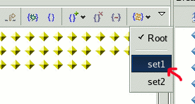
Note: the Process View in the following screen shot is also known as the Debug View. 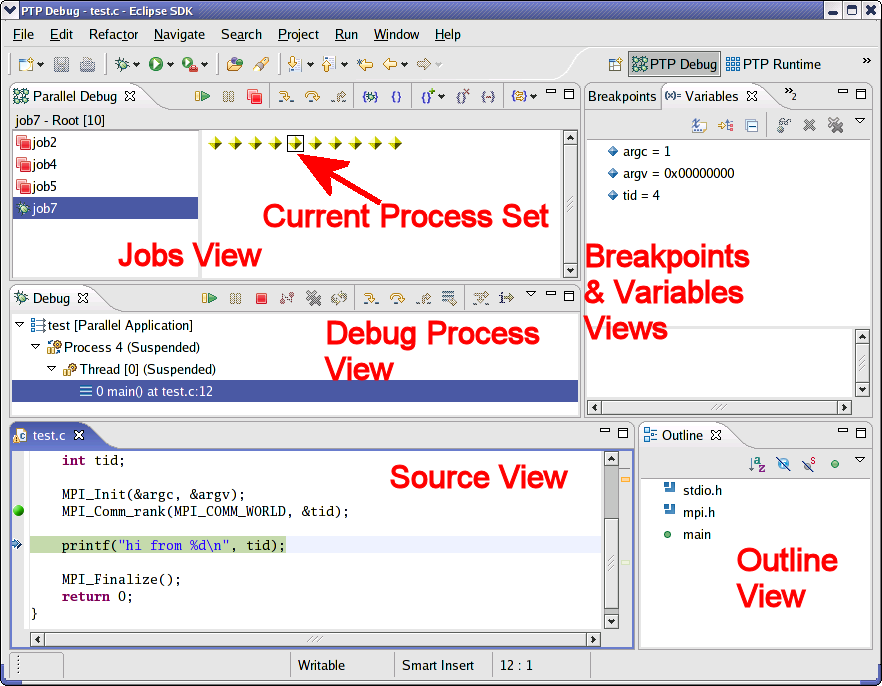
In the Debug launch dialog (Run -> Debug ... or use the Debug icon on the eclipse toolbar)
For existing Parallel Application launch configurations, you can simply launch using the debug button rather than the Run button
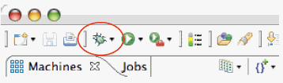
Traditional debuggers apply operations to a single process. Parallel debugging operations apply to a single process or to arbitrary collections of processes.
A process set is a means of simultaneously referring to one or more processes.
When a parallel debug session is first started, all processes are placed in a set, called the 'Root' set. Sets are always associated with a single Job. A job can have any number of process sets. A set can contain from 1 to the number of processes in a job.
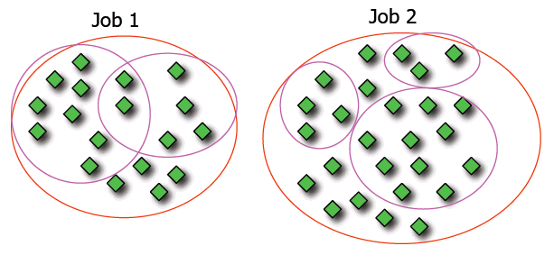
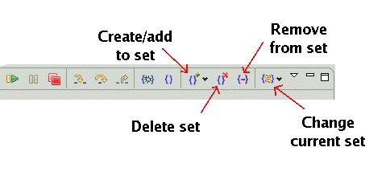
Debug operations always apply to the current set.
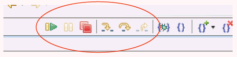
Select the processes to be placed in the set
by selecting a rectangular region with the mouse,
or click the mouse and shift-click or ctrl-click to
select a contiguous region, or separate processes, respectively.
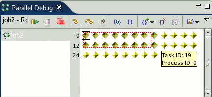
Choose the set to add processes to
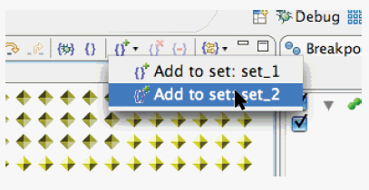
To remove processes from a set, select the processes
as described above, and remove them.
To change the current process set, select the icon
and choose from the list. Clicking on the icon will cycle through
the sets.)
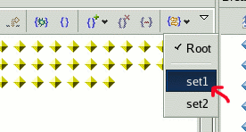
Select the "Delete Set" icon to delete the current process set.
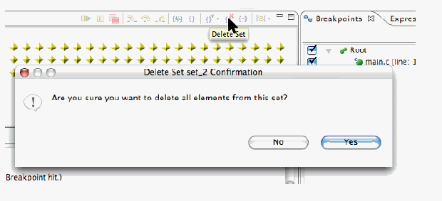
There are two main types of breakpoints.
Green indicates the breakpoint is applied to the current set.
Blue indicates the breakpoint is applied to some other set.
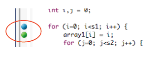
To create a breakpoint, double-click on the left edge of
an editor window, at the line on which you want to set the breakpoint.
Or, right click and use the context menu.
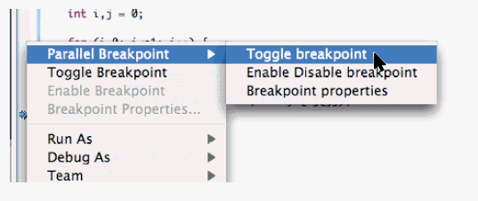
A global breakpoint is created if no jobs are selected. If a job is selected, the breakpoint will apply to the current set.
Hover over a breakpoint to see more information.
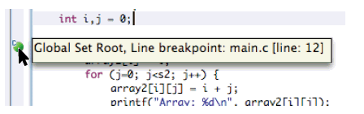
Use the Breakpoints view to see all breakpoints.
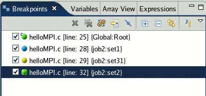
Use the menu in the Breakpoints view to group breakpoints
by type.
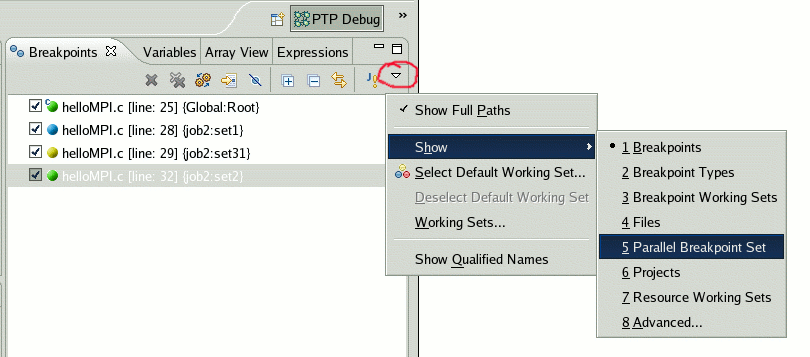
The current instruction pointer is used to show the current location of suspended processes. In traditional programs, there is a single instruction pointer. (The exception to this is multi-threaded programs.) In parallel programs, there is an instruction pointer for every process.
The PTP debugger shows one instruction pointer for every group of processes at the same location.
Note: The group of processes represented by an instruction pointer is not necessarily the same as a process set.
In the normal debugger, the single instruction pointer
is indicated with the blue arrow icon. The current source line is also highlighted.
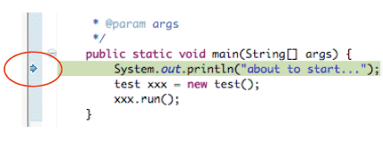
In the PTP (parallel) debugger, there are multiple instruction pointers.
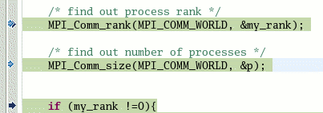
Hovering over the instruction pointer provides additional information.
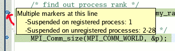
Process set commands apply to groups of processes. For finer control and more detailed information, a process can be registered and isolated in the Debug View.
Registered processes, including their stack traces, appear in the 'Debug' view. Any number of processes can be registered, and processes can be registered or un-registered at any time.
To register a process, double-click its process icon in the Jobs view.
Note that the process "diamond" then is surrounded by a box.
The process appears in the debug view.

To un-register a process, double-click on the same icon. The box disappears, and the process is removed from the debug view.
Note that the debug commands (icons including run, step, etc.) in the toolbar of the Jobs view (tab title: Parallel Debug) control the currently selected process set. The debug commands in the toolbar of the Debug view control the single process that is currently selected in that view.
Note that with the above instructions, you should now be able to do the following:
 in the toolbar of the
Parallel Debug View (near the top).
in the toolbar of the
Parallel Debug View (near the top).
in the toolbar of the
Debug View (near the top).
in the toolbar of the
Parallel Debug View (near the top).
in the toolbar of the
Parallel Debug View (near the top).
in the toolbar of the
Debug View (near the top).